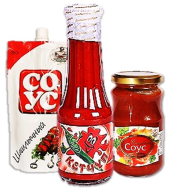

Компания ООО «Донконсервпром» была образована в 2001 году
и является высокопрофессиональным производителем
натуральных продуктов.
Самое ценное для нас - благополучие и свобода выбора наших покупателей. Именно потому, для производства наших продуктов мы используем только натуральное сырье, обеспечивая полезность выпускаемого продукта. Мы непрерывно совершенствуем технологии производства, добиваясь неизменно высокого качества.
Самое ценное для нас - благополучие и свобода выбора наших покупателей. Именно потому, для производства наших продуктов мы используем только натуральное сырье, обеспечивая полезность выпускаемого продукта. Мы непрерывно совершенствуем технологии производства, добиваясь неизменно высокого качества.
г.Ростов-на-Дону, ул.Вавилова, 62/1
тел.(863) 237-23-86